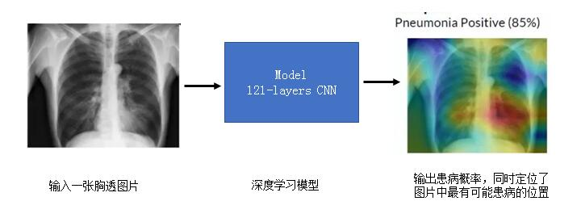
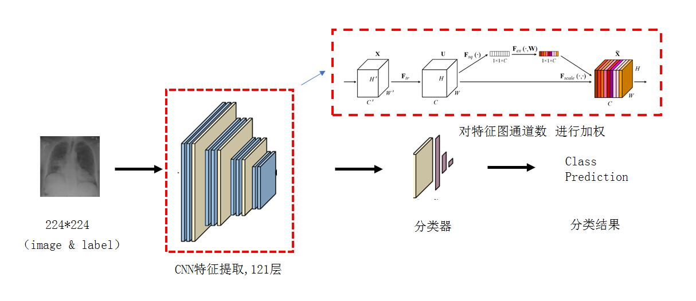

项目简介
胸部X射线肺部疾病检测
我们采用了一种新的机器学习模型，可以让计算机通过胸透照片自动诊断肺炎，其诊断准确率达到了放射科医师标准。
训练模型
改进的DensNet121模型
通道数加权提取:目标是确保网络能够利用增加网络本身对有价值信息的敏感性，以使得这些有价值的信息在之后的网络层中能够得到利用，而没有什么用的特征信息则被舍弃
对通道数进行压缩和激励:为了达到对通道之间的依赖关系进行精确建模以校准卷积核操作，自动获取到每个特征通道的重要程度，然后依照这个重要程度去提升有用的特征并抑制对当前任务用处不大的特征
实验结果
实验结果对比
绿框是检测框